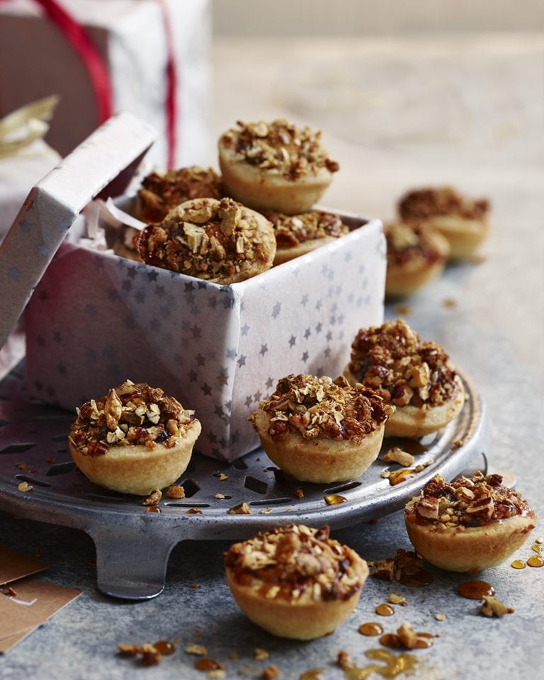

Mini Scandinavian Crumble Pies
MAKES 24
HANDS-ON TIME 30 MIN, OVEN TIME 15 MIN, PLUS CHILLING
A crumbly mix of marzipan, pecans and oats top our vegan mince pies, before they’re topped with maple syrup and edible gold shimmer for extra Christmas pizazz.
Ingredients
- 500g block shortcrust pastry (see tip; we used Jus-Rol)
- Plain flour to dust
- Maple syrup to serve
- Edible gold glitter/shimmer (from Sainsbury’s or Waitrose; optional)
For the mincemeat
- 125g mincemeat (see tip; we used Meridian Organic Mince Pie Filling, which is vegan)
- 100g tropical mix dried fruit
- 3 tbsp cherry brandy (see tip)
- 50g marzipan (see tip), chopped
- 15g pecan halves, toasted in a dry frying pan and chopped
- ¼ tsp ground cinnamon
For the crumble
- 50g marzipan (see tip), grated
- 30g pecan halves, toasted in a dry frying pan and chopped
- 20g rolled oats
- 1 tsp demerara sugar
You’ll also need…
- 4-5cm plain or fluted cutter
- a 24-hole mini bun/muffin tray (we used KitchenCraft, from amazon.co.uk)
Method
Roll out the pastry on a lightly floured surface to 5mm thick. Use a cutter to stamp out 24 discs, re-rolling as necessary, then use the discs to line 24 holes of the tray. Chill for at least 30 minutes.
Mix all the mincemeat ingredients together in a bowl. Cover until needed.
Heat the oven to 190°C/170°C fan/gas 5. Put all the crumble ingredients in a bowl and rub together with your fingertips until you begin to get a crumbly mixture.
Spoon the mincemeat equally among the pastry cases and sprinkle evenly with the crumble mixture.
Bake for 15 minutes until the pastry is golden and the crumble is slightly crunchy. Leave to cool for 5 minutes in the tin, then remove to a wire rack to cool completely.
Drizzle with maple syrup and a sprinkle of glitter/shimmer, if you like, or wrap in a gift box to give as a present.
Tips!
This recipe can easily be doubled to make 48. Use any extra pastry to make pastry lids instead of the pecan crumble, if you like. If you’re making this recipe for vegans, be sure to check product labels to make sure pastry, mincemeat, brandy, marzipan and gold shimmer (if using) are suitable.
Once cool, keep the mince pies in an airtight container for up to 4 days.